Explorador de variables#
El Explorador de variables te permite navegar y administrar de forma interactiva los objetos generados al ejecutar tu código.
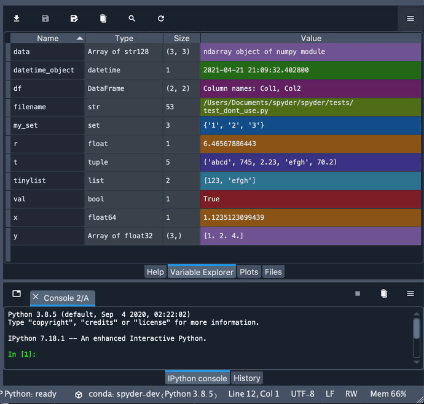Muestra el contenido del espacio de nombres (incluyendo todos los objetos globales, variables, instancias de clase y más) de la sesión Terminal de IPython seleccionada, y te permite agregar, eliminar y editar sus valores a través de una variedad de editores basados en GUI.
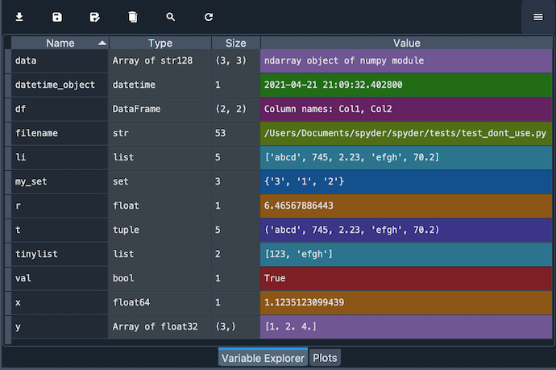El Explorador de variables te proporciona información sobre el nombre, tamaño, tipo y valor de cada objeto. Para modificar una variable escalar, como un número, cadena o booleano, simplemente haz doble clic en el panel y escribe su nuevo valor.
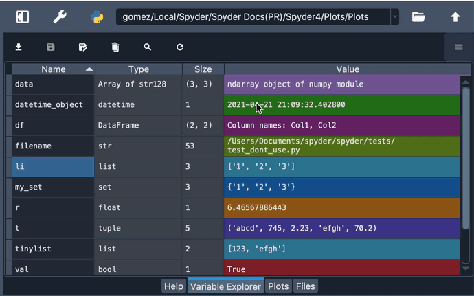Visor de objetos#
El Explorador de variables de Spyder ofrece soporte integrado para editar listas, cadenas, diccionarios, matrices NumPy, Pandas DataFrames, Series y más; además de poder crear gráficos y visualizarlos con un solo clic.
Cadenas de texto#
Cuando una variable de cadena es más larga que cuarenta caracteres, puedes hacer doble clic en ella para ver su valor en un editor de texto para modificarla más fácilmente.
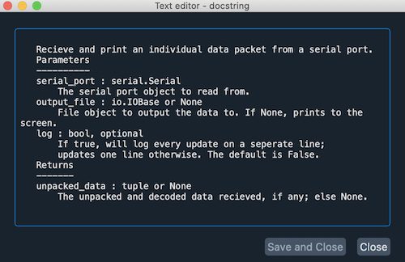{kind=link}
Diccionarios#
Al hacer doble clic en los diccionarios se desplegará un visor que muestra cada una de sus llaves con su valor asociado. Puedes hacer doble clic en cualquiera de los valores para modificarlos, lo que abrirá un nuevo visor si el valor en sí mismo es un objeto.
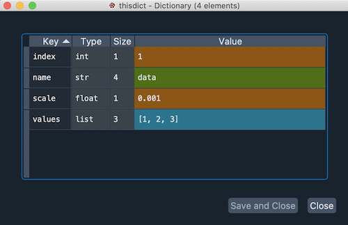{kind=link}
Listas#
En el caso de las listas, el Explorador de variables principal muestra una vista previa de los diez primeros valores. Para verlos todos, haz doble clic en la lista para abrir un visor que te mostrará el índice, tipo, tamaño y valor de cada elemento de la lista. Al igual que los diccionarios, puedes hacer doble clic en los valores para editarlos.
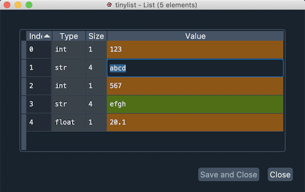{kind=link}
Arreglos de NumPy#
Al igual que las listas, para las arreglos de Numpy el Explorador de variables muestra una vista previa de sus valores. Al hacer doble clic en ellos, se abrirá un visor que muestra los valores de la matriz en un «mapa de calor», con cada valor en una celda de cuadrícula coloreada en base a su cantidad numérica. Puedes desactivar el color de fondo desmarcando la opción apropiada en el visor, lo que sucederá automáticamente si la matriz es demasiado grande para mejorar el rendimiento.
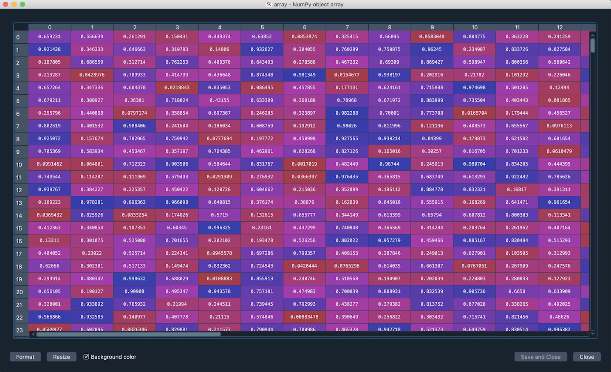Si es compatible con el tipo de datos, también puedes cambiar el formato de los valores del arreglo, eligiendo el número de decimales que desea que el arreglo muestre. Para esto, haz clic en el botón Formato y establece el formato deseado en el diálogo que aparece, usando la sintaxis estándar Printf-style syntax.
Además, puedes ajustar el tamaño de las filas y columnas del arreglo expandiendo o contrayendo sus encabezados. Al hacer clic en el botón Cambiar tamaño se establecerá automáticamente.
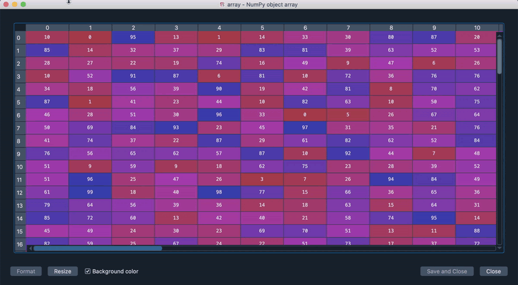DataFrames#
Los DataFrames, al igual que los arreglos de Numpy, se muestran en un visor donde puedes mostrar u ocultar los colores del «mapa de calor», cambiar el formato y cambiar el tamaño de las filas y columnas, ya sea de forma manual o automática.
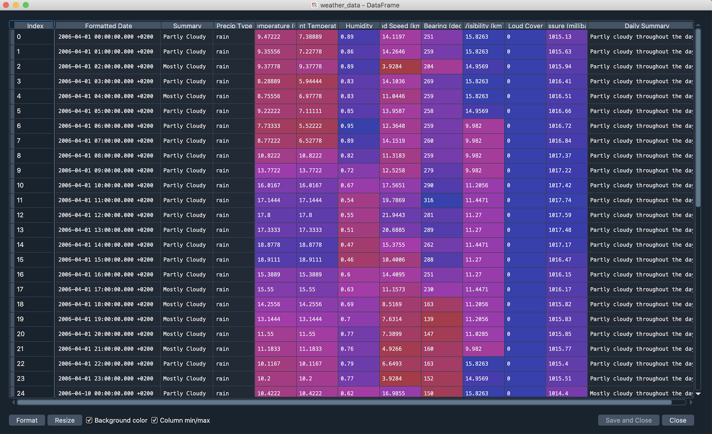Adicionalmente, a partir de Spyder 4, el Explorador de variables tiene soporte MultiIndex en su inspector de DataFrame, incluyendo índices multi-nivel y multidimensionales.
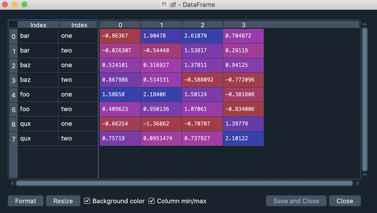{kind=link}
Funcionalidad avanzada#
El menú contextual, disponible haciendo clic derecho en cualquier variable, proporciona numerosas opciones adicionales para interactuar con objetos de varios tipos. Estas incluyen renombrar, eliminar o editar variables existentes, así como la opción Duplicar para crear una nueva copia de una de ellas bajo un nuevo nombre que puedes ingresar en el cuadro de diálogo resultante.
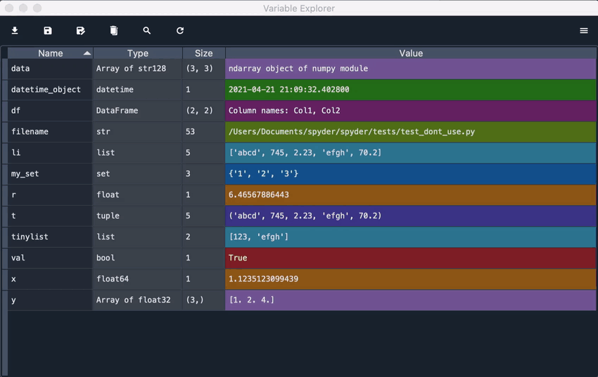Además, puedes copiar y pegar el valor de una variable, guardándola en el Explorador de variables con el nombre que elijas. Esto te permite cambiar el tipo de variable que estás pegando, lo que puede ser muy útil. Por ejemplo, te permite copiar fácilmente los elementos de una lista en una matriz.
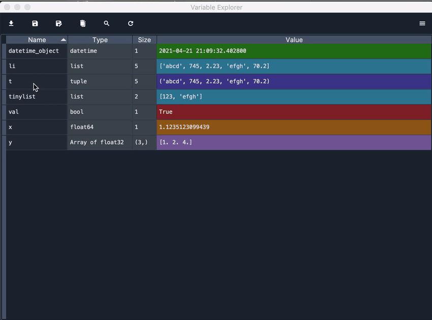Adicionalmente, puedes crear un objeto desde cero directamente en el Explorador de variables con la opción Insertar, que te permite escribir la clave (que debería estar entre comillas) y el valor del elemento que deseas insertar. Además de añadir una nueva variable de nivel superior, esta característica también te permite crear una nueva llave en un diccionario, un nuevo elemento en una lista, y mucho más.
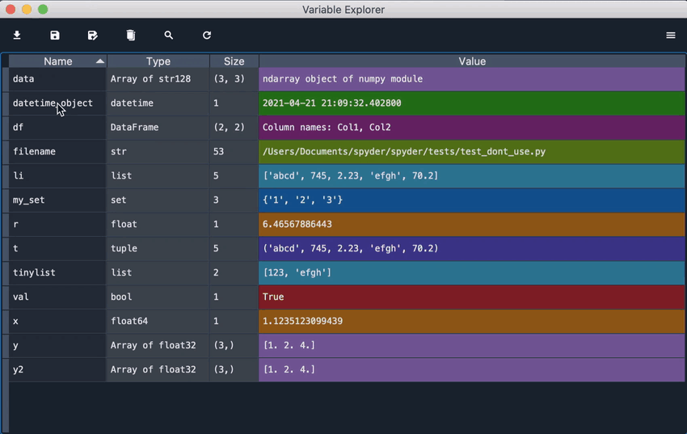Para listas y arreglos de NumPy, hay opciones avanzadas disponibles, incluyendo la generación de gráficos e histogramas de sus valores apropiados a su tipo y dimensiones.
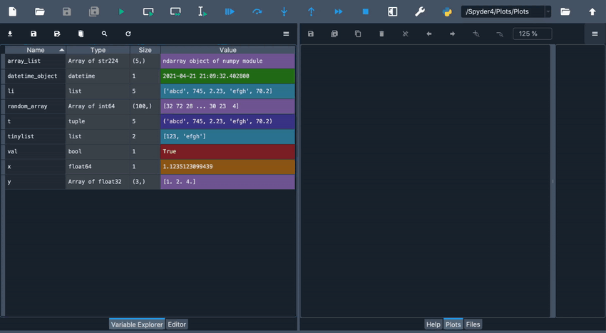Incluso puedes guardar un arreglo en un archivo .npy simplemente haciendo clic en la opción apropiada, que luego puede ser cargada por Spyder o en tu código a través de numpy.load().
{kind=link}
En el caso de arreglos bidimensionales, también puedes mostrarlos como imágenes, tratando sus valores como colores RGB. Para esto, Spyder utiliza los mapas de colores de Matplotlib, que pueden ser fácilmente cambiados para que coincidan con tus preferencias.
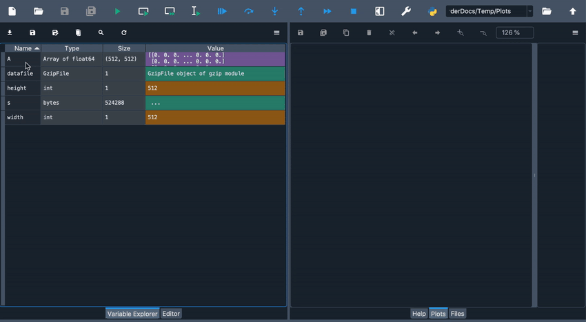Finalmente, hemos añadido una acción de menú contextual para abrir cualquier objeto usando el nuevo Explorador de objetos incluso si ya tienen un visor incorporado (DataFrames, arreglos, etc) permitiendo una inspección más profunda del funcionamiento interno de estos tipos de datos.
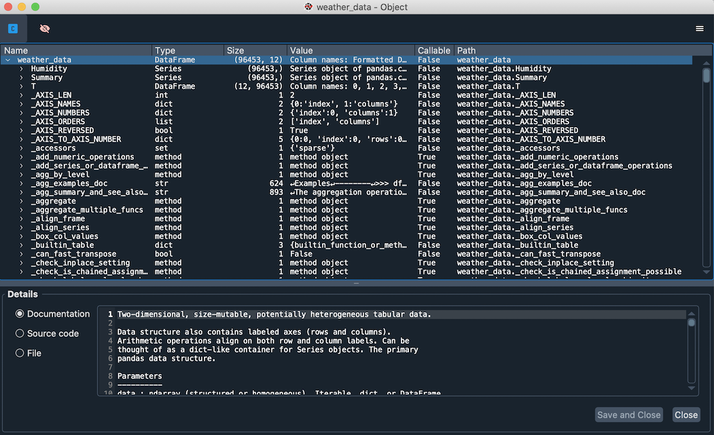